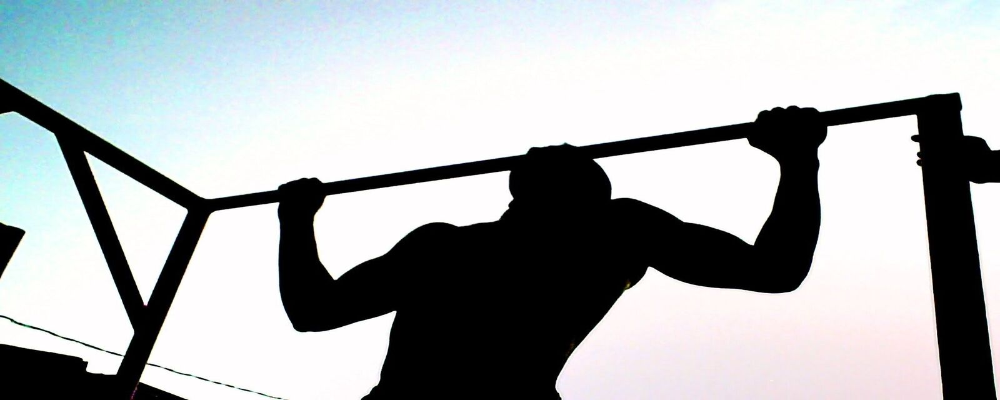

Street Workout
Some representative placeholder content for the first slide.
Street Workout
Some representative placeholder content for the second slide.

Street Workout
Some representative placeholder content for the third slide.